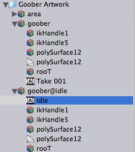

Previous
Previous

An imported animation selected in the project view
Animation clips store all animation data that can be used for animated characters or simple animations.
They contain only one property which can not be modified. The sample rate. This is the sample rate at which the clip was created. Note that Unity performs keyframe reduction when importing animations, thus this is not the number of keys.